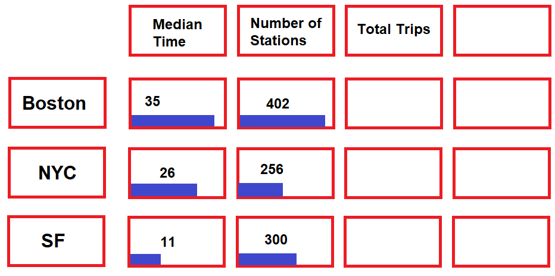

Bike shares are a boomin’

For the introduction infographic, we'd like to summarize the following data
- Summary of different bike share metrics (e.g. total trips, stations, etc.) across systems
- Membership Plans
- Unique Attributes about each system (e.g. how NYC has nothing in Staten Island)
Bike-share System Trends Across Time
CA is issuing a statewide, mandatory STAY AT HOME order.
— Gavin Newsom (@GavinNewsom) March 20, 2020
Those that work in critical sectors should go to work. Grocery stores, pharmacies, banks and more will stay open.
We need to meet this moment and flatten the curve together.
Go to https://t.co/xtXFwVeWc2 to learn more.
- This time series chart will show a timelapse for each city and present a news feed from twitter based on key events (e.g. California Wild-fires, Hurricanes, COVID lock-downs, Bike milestones, etc.).
- During the timelapse, the graph will scale based on the time series being shown
- Once the timelapse is done, users can change different filters, zoom, pane, and explore the time series data.
- We will support other metrics such as time duration, rolling averages, etc.
- Will support brushing
Exploring Bike Shares By City - San Francisco
Bike Share Networks

For the network graphs, we plan on exploring the n-most common routes for a given time period and implement the following features
- Filter for certain time periods
- Only add labels to major stations
- Edges for less frequent trips would be greyed out
- Include directed edges
Exploring Bike Shares By City - Boston

Exploring Bike Shares By City - New York City

Windmap showing directions of cyclists at a certain time of day
Day View 21st March 2021
Concluding Statements
- Discuss general trends
- Discuss trends across cities
- Discuss Future Work